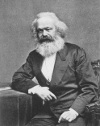

Karl Marx (1818–1883) dünya tarihi üzerinde pek çok filozoftan daha büyük bir etkiye sahip olmuştur. Almanya doğumlu gazeteci ve politika yorumcusu, dünya komünizminin kurucusudur. 20. yy’da onun prensipleri temelinde
Marksist bir toplum oluşturmak isteyen düzinelerce devlet kurulmuştur.

Bazıları insanlık tarihinin en kanlıları olan bu rejimler, bir ölçüde Marx’ın ününe leke sürmüştür. Ancak Marx kendi kitaplarının, broşürlerinin ve gazete yazılarının orduların askere çağırma sloganlarına dönüştüğünü görmeden ölmüştür. O kendisini daha ziyade ekonomi, siyaset ve toplum arasındaki etkileşimi belgelemeye ve analiz etmeye çalışan bir tarihçi olarak görüyordu.
Almanya’nın Rhineland bölgesindeki Trier’de doğdu. Babası anti-Yahudi yasalardan korunmak için Hıristiyanlığı kabul eden bir Yahudiydi. Marx felsefe alanında çalıştı. 1841 yılında Antik Yunan filozofları ile ilgili yazdığı tezle bu dalda doktorluk unvanı kazandı.
Ancak Marx bir akademisyen olarak iş bulamadı. 1840 yılında gazetecilik yapmaya başladı. Avrupa’da gelişen radikal hareketler hakkında haberler yazıyordu. 1848 yılında bir devrim dalgası İtalya, Fransa ve Almanya’nın bazı bölgelerine kadar ulaşmıştı. Marx kıta genelinde yayılan bu geniş ölçekli öfke patlamasını dile getiren Komünist Manifesto’nun yazarlarından biri oldu.
Manifesto başlangıcındaki “Avrupa’da bir hayalet dolaşıyor, komünizm hayaleti,” cümlesi ile Marx’ın belki de en ünlü eseri olmuştur. Ancak pek çok açıdan bu metnin onun diğer eserlerinden farklı olduğu söylenebilir. Marx’ın hayatının önemli bir bölümünü yazmak için harcadığı Das Kapital, tam aksine oldukça uzun ve yoğun bir metindi. Sınıf ve ekonomi ilişkisi ile ilgili bilimsel bir eser olarak değerlendirilmektedir. Marx, tarihin üretim kapasitesindeki gelişmeler tarafından kontrol edildiğini ileri sürüyordu. 19. yy’ın endüstriyel kapitalizmi feodal düzenin yerine geçen yeni bir toplum modeli, insanlık tarihinde yeni bir aşamaydı. Kapitalizmin ardından ise komünizm gelecekti. Komünizm kurulduğunda işçiler üretimi kontrol edecek ve refahın eşit bir şekilde dağılımını sağlayacaktı.
Radikallerle ilişkileri nedeniyle Marx Almanya, Fransa ve Belçika gibi ülkelerden sürgün edildi. Sonunda 1849 yılında Londra’ya yerleşti ve hayatının kalan kısmını burada geçirdi. Öldüğü sırada altmış dört yaşındaydı.
Ek Bilgiler
1- Marx ABD’ye hiç gitmemesine rağmen İç Savaş sırasında coşkulu bir Birlik destekçisiydi. Kısa bir dönem “The New York Tribune”un Avrupa muhabiri olarak çalışmıştı.
2- Marx, Friedrich Engels (1820–1895) ile birçok ortak çalışma yürütmüştür. Komünist Manifesto’yu birlikte yazdılar. Daha sonra “Kapital”in son iki bölümünün düzenlemesini de Engels yaptı.
3- Marx, sosyal sınıfları adlandırmak için daha sonra dünya siyaset literatürüne girecek iki kavram kullandı. Proleterya sömürülen işçi sınıfını, burjuvazi ise orta sınıfı tanımlıyordu.